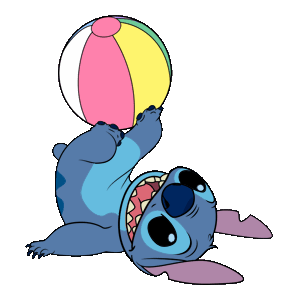

3242432744
castillonelcy53@gmail.com
castillosofia53
Integración de contenidos digitales
2026
Creatividad
Diseño grafico
Comunicación
TRabajo en equipo
Andres
Instructor del SENA
tel:3022283384
Creadora de contenido digital
Soy una persona creativa,responsable y compremetida con mis proyectos. Me interesa el diseño y la creación de contenidos digitales y la producción audivisual,me gusta aprender nuevas herramientas y desarrollar ideas de manera creativa.
Soy una persona creativa, responsable y comprometida con mis proyectos...
Proyecto académico | 2026
Desarrollo de contenidos digitales para proyectos académicos, utilizando herramientas de diseño, edición y producción audiovisual.
Proyecto académico | 2026
Elaboración de piezas gráficas y propuestas visuales utilizando diferentes herramientas digitales.
Proyecto académico | 2026
Creación de personajes, escenas y animaciones mediante herramientas digitales.